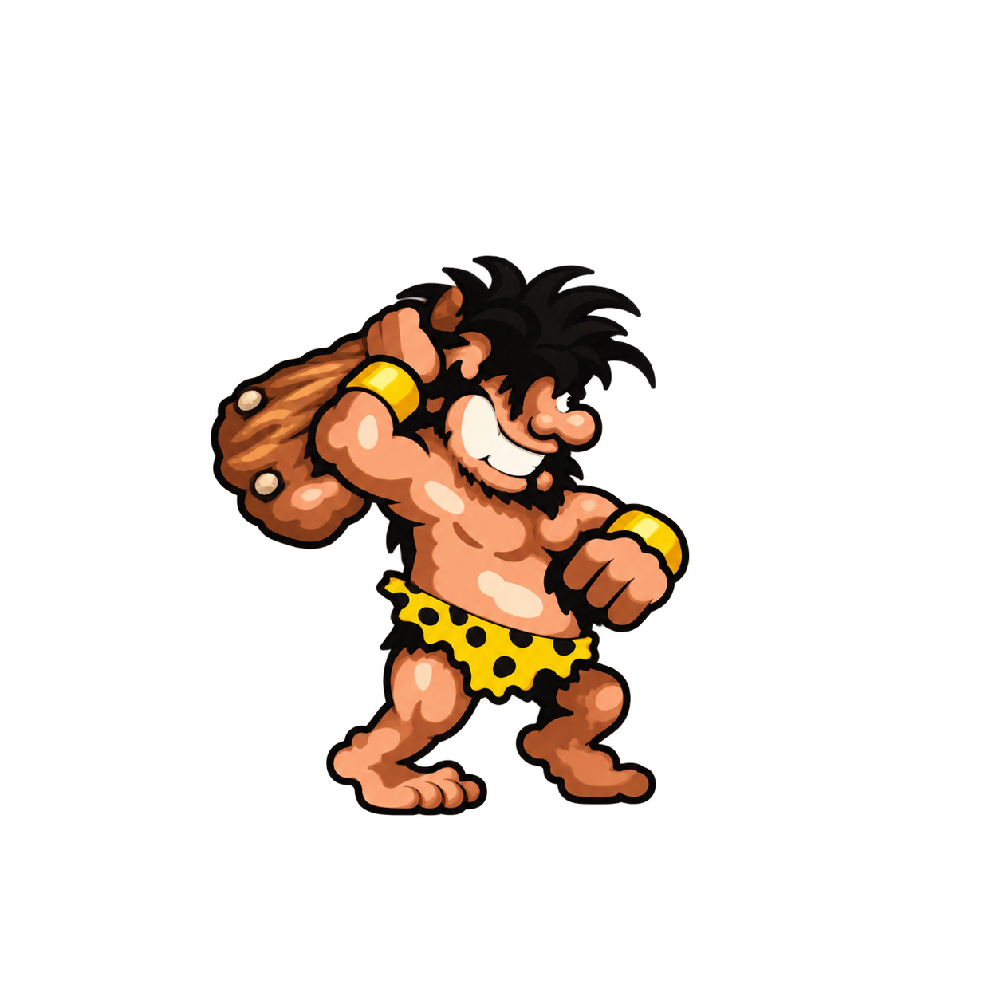
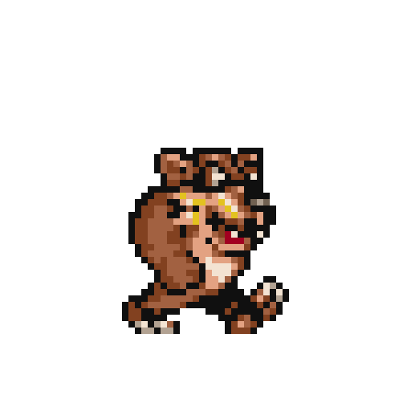
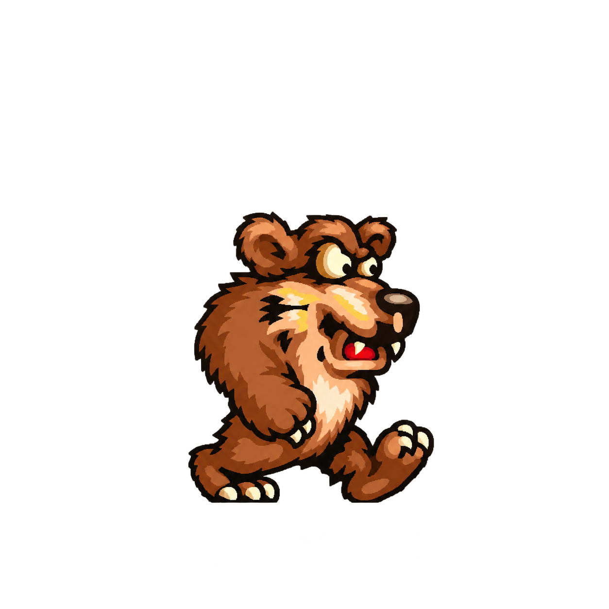

Vlevo jsou původní pixely zvětšené bez úprav, vpravo AI překreslení stejné pózy. Oba obrázky mají průhledné pozadí; šachovnice slouží jen pro porovnání.



Ukázky obsahují jednu pózu každé postavy. Hra nadále používá původní grafiku. AI doplňuje detaily a může změnit obrysy; před nasazením je nutné sjednotit všechny animační snímky, rozměry a kotevní body a přidat vykreslování ve vyšším rozlišení. Pravidla a kolize mohou zůstat v původních souřadnicích.